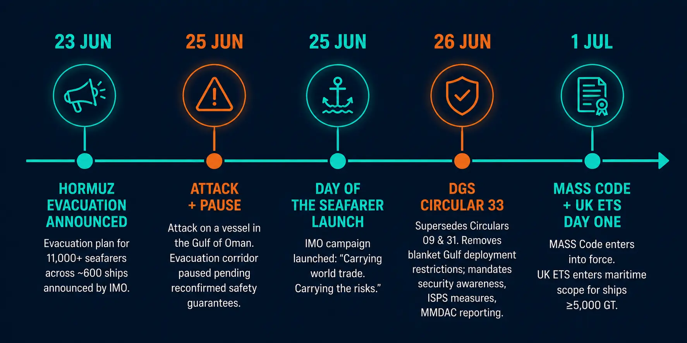
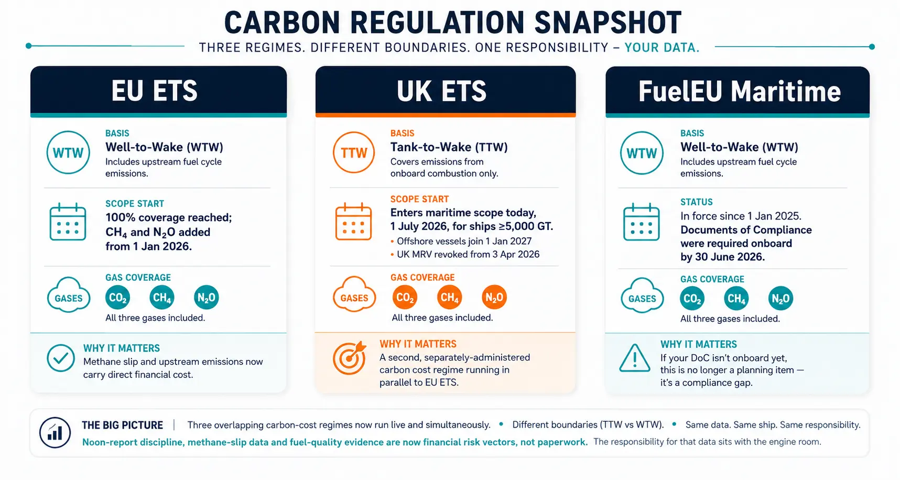
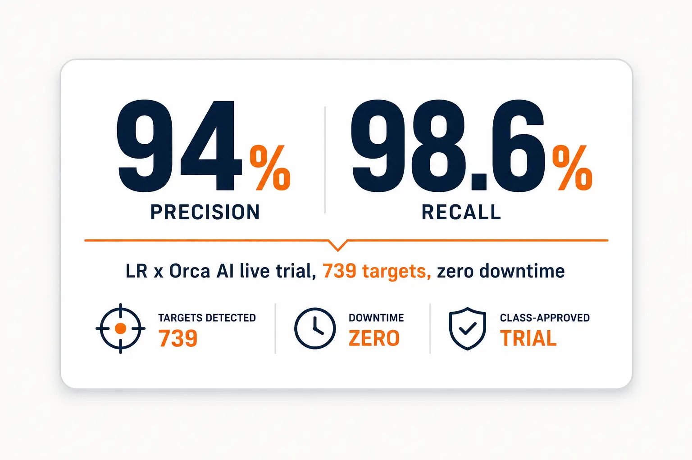
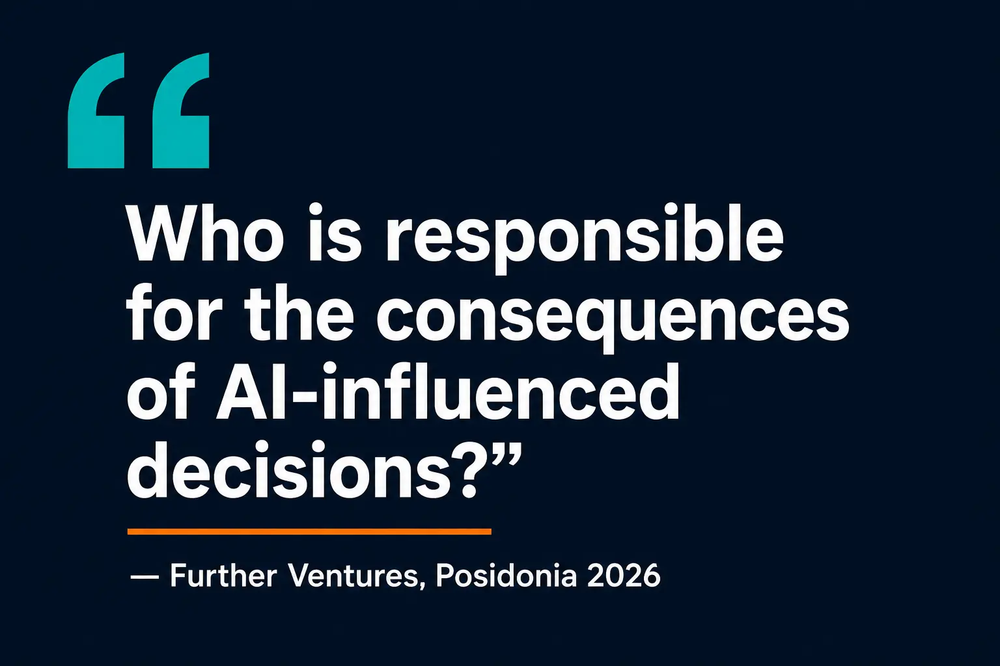
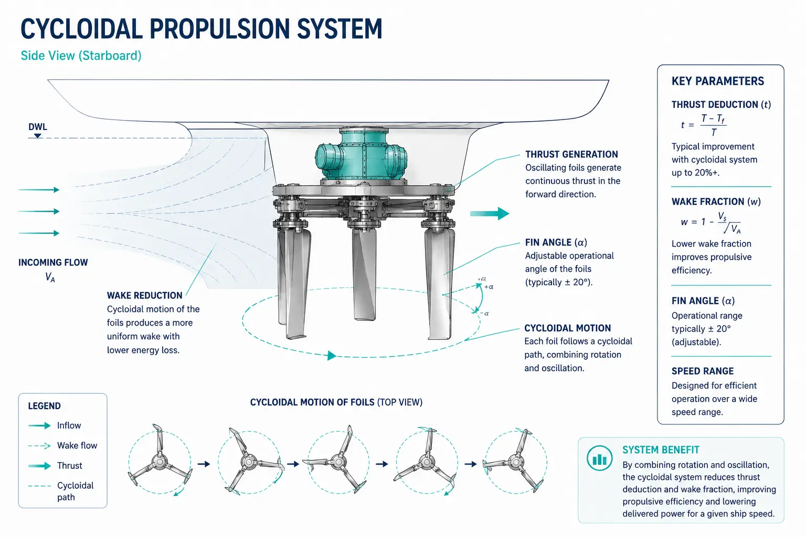

Quick Read
- Data: AI is now embedded in classification (KR+Microsoft), navigation (Orca AI fleet rollout), retrofit design (FIT-HORIZONS), and ops platforms (Ocean Smart) — every one running on engine-room and bridge data you generate.
- Risk: IMO paused its Hormuz evacuation of 11,000+ seafarers on ~600 ships after a Gulf of Oman attack — geopolitics rewrote a machinery-operation profile overnight, with no SOLAS amendment in sight.
- Responsibility: MASS Code enters into force today, 1 July 2026 — the same day UK ETS enters maritime scope — and Further Ventures is asking the question regulators haven't answered: who owns an AI-influenced decision?
- DGS Circular 33 resets Gulf security posture for Indian seafarers — security awareness is now a documented competency, not a vibe.
- NCSR 13 finalised digital VHF, S-100 ECDIS, R-mode and two-way EPIRB standards — the SAR communications backbone behind the Hormuz story.
Feature — Carrying the Risks: When Geopolitics Becomes a Machinery Problem
Imagine standing engine-room watch while knowing the next alteration of course is no longer driven by weather or traffic — but by missiles. That was the reality for crews on roughly 600 ships caught in the Strait of Hormuz closure in late June 2026. On 23–24 June, IMO detailed an evacuation corridor for 11,000+ seafarers via Iranian/Omani waters. On 25 June, an attack on a vessel in the Gulf of Oman forced a temporary pause — transit outside the designated routes fell outside the "safe passage" assurance, fully at owner/operator/master's risk.
This is Data, Risk, Responsibility in miniature: the data is the corridor coordinates and threat reporting, the risk is a machinery-operation profile rewritten in hours, and the responsibility lands, as always, on the master and engineers who have no SOLAS clause to point to.

Route deviation, speed change, and emergency readiness in a live threat corridor change fuel-consumption patterns, stress on steering/propulsion/power systems, and demand instant readiness of emergency power — without a single line of SOLAS changing. Tie to NCSR 13: this is exactly why R-mode (GNSS-independent backup nav) and two-way EPIRB (Galileo SAR Return Link) were finalised this same week — SAR communication reliability is becoming interactive just as corridor risk rises. More data flowing into the bridge is only useful if responsibility for acting on it is equally well-defined — which, as the MASS Code shows below, it currently isn't.
Bridge to Day of the Seafarer 2026 (launched 25 June): theme "Carrying world trade. Carrying the risks." Seafarers are not pawns of geopolitical conflict. This is the human-factors anchor for the AI discussion below: alarm overload, poor interface design, and rushed automated decisions turn "carrying the risks" into literal harm.
DGS Circular 33 (26 June) supersedes Circulars 09 and 31 — removes blanket Gulf deployment restrictions for Indian seafarers/RPSL agencies, but mandates heightened security awareness, ISPS Code compliance, MMDAC reporting. Direct MEO Class 1 exam touchpoint: ISPS Code, ISM Code Section 7, machinery readiness for rapid manoeuvring, emergency power availability.
Regulatory Pulse
1. IMO Strait of Hormuz Evacuation Framework + Pause
What changed: 23–24 June — evacuation plan for 11,000+ seafarers/~600 ships announced. 25 June — paused after Gulf of Oman attack, pending reconfirmed safety guarantees.
2. Day of the Seafarer 2026 — "Carrying world trade. Carrying the risks."
What changed: IMO campaign launched 25 June 2026, amplifying conflict-zone crew accounts.
3. DGS Circular No. 33 of 2026 (26 June)
What changed: Supersedes Circulars 09 and 31. Removes blanket Gulf deployment restrictions on Indian seafarers/RPSL agencies; mandates heightened security awareness, ISPS measures, MMDAC reporting.
4. MASS Code — Entry into Force 1 July 2026
What changed: Non-mandatory MASS Code (adopted MSC 111, 21 May 2026) enters force today. Goal-based framework, 4 Degrees of Autonomy, Remote Operations Centres formalised; master's overriding authority issue under DoA 3/4 remains legally unresolved.
5. NCSR 13 — Digital VHF, S-100 ECDIS, R-mode, EPIRB Two-Way
What changed: Finalised draft circulars on digital VHF transition, IP-based S-100 ECDIS data exchange; R-mode performance standards finalised; EPIRB amendments (MSC.471(101)) add optional two-way Galileo SAR Return Link comms. Subject to MSC 112 approval (Dec 2026).
6. Carbon Regulation Snapshot

AI in Maritime
1. Agentic AI Enters the Trust Layer — KR + Microsoft
KR signed an MoU with Microsoft Korea (9 June 2026) to integrate generative AI/AI agents across classification operations, inspections and technical services.
2. AI Navigation Moves from Trial to Fleet — Orca AI / LR
LR's live class-approved trial on a feeder containership returned 94% precision, 98.6% recall, zero downtime across 739 targets. Now commercialised at fleet scale (Gram Car Carriers, Anglo-Eastern).

3. AI-Native Operations Platforms — Ocean Smart
South Korean startup, AI-native "GDS for shipping" platform for route planning, capacity allocation, schedule coordination.
4. AI-Supported Retrofit Design — FIT-HORIZONS
19-company consortium (launched 10 June 2026) building an AI-supported retrofit-design environment for the existing fleet.
5. Governance Catches Up — Further Ventures
Athens-based maritime AI governance think tank launched at Posidonia. Core question: "who is responsible for the consequences of AI-influenced decisions?"

Classification Insights
1. ABB Dynafin™ Cycloidal Propulsion — Measured, Not Conceptual
MARIN self-propulsion tests plus RANS simulations show a 22% reduction in delivered power at the Ro-Ro's design speed of 15 knots vs. a twin-shaft propeller-and-rudder arrangement.

2. ABB Waterside Automation — Quay Crane AI Vision
AI vision + sensor fusion automates ship-to-shore crane handling; operators shift to supervisory pooling across multiple cranes.
3. Emissions Data Standard — Class + BIMCO Data Plumbing
LR, ABS, BV, ClassNK, DNV + BIMCO/IACS/Energy LEAP standardised emissions data set, incorporated into IMO Compendium after FAL 49.
Nixon's Voice
2nd Engineer, Maersk A/S · Editor, MIW
Every few weeks I notice another responsibility quietly moving onto the engineer's shoulders. We now manage machinery, emissions, cybersecurity, AI-assisted decisions and, increasingly, geopolitical uncertainty. None of these replace engineering. They expand what engineering leadership means.
This week made that unusually concrete. The same seven days gave us an AI agent reading classification rules, a navigation system finalised because GPS can no longer be trusted alone, a corridor of ships paused because a missile changed the risk calculus, and a code entering force that still can't say, cleanly, who's in charge when the autonomy level goes up. It's the difference between a noon report that's just a number and a noon report that's evidence in an ETS audit. It's the difference between an EPIRB that broadcasts and one that can talk back. It's the difference between trusting an AI-flagged finding and being able to explain exactly where my judgement entered the loop.
The engine room is no longer measured only by uptime. It's measured by whether the data we generate can survive being questioned.
Takeaway Table
| Topic | Key Point | Action for Engineers | Exam Connection |
|---|---|---|---|
| Hormuz evacuation/pause | Geopolitics rewrites ops profile overnight | Build contingency machinery-readiness drills tied to security advisories | How would you justify an emergency power readiness drill with no SOLAS trigger? |
| MASS Code (1 Jul 2026) | Master's authority unresolved under DoA 3/4 | Understand DoA 1–4 framework; track flag-state adoption | Explain the 4 Degrees of Autonomy and where master's authority becomes ambiguous. |
| Carbon Regulation Snapshot | Three regimes, TTW vs WTW boundaries | Verify fuel-meter calibration, voyage segmentation now | Differentiate Tank-to-Wake and Well-to-Wake — why does the boundary matter for cost? |
| DGS Circular 33 | Blanket Gulf restriction lifted, security awareness mandated | Embed MMDAC contact drills into SMS contingency plans | What is your obligation under ISM Code Section 7 during a security incident? |
| NCSR 13 outputs | Digital VHF, S-100 ECDIS, R-mode, 2-way EPIRB finalised | Anticipate IP-based nav/comms refits; align cyber controls | What is R-mode and why was it developed? |
| KR + Microsoft AI agents | AI drafting class findings, human review | Ask class society how AI-assisted findings are evidenced | Who is accountable if an AI-assisted survey finding is later found wrong? |
| Orca AI fleet rollout | AI watchkeeping at commercial fleet scale | Treat AI nav alerts as cross-check tool, document overrides | Under COLREG, can an AI navigation alert change the OOW's obligations? |
Next issue: tracking how MASS Code's first 30 days reshape ROC competency debates, plus the UK ETS Day One financial fallout as the first voyages get reported.